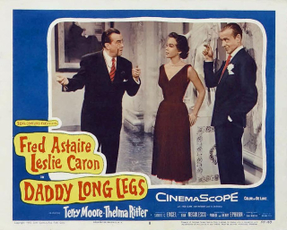
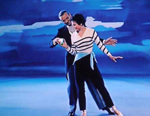
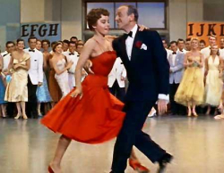

From my Facebook archives, March 8, 2015:
Daddy Long Legs. 20th Century Fox, 1955. This film will always hold a special distinction for us, since it was where we first discovered the magic of Fred Astaire back in September 2013. We watched it for the second time a couple weeks ago. In the interim, I've gone from completely unknowledgeable about Fred's life and career to a sort of "expert", having seen all his musical films except the final two, and having read numerous books about him. It was interesting seeing Daddy Long Legs with this new perspective.
For example, I now know the Fred's wife had died from lung cancer very shortly before the filming was to begin, and that Fred has tried to get out of making the picture, but had been talked into continuing by his friends and colleagues. The producers arranged the schedule to accommodate Fred's grief, and in the final product his pain is undetectable. It is a fun, upbeat film and his performance on screen fits that mood perfectly.
On a more technical note, this was the first widescreen ("CinemaScope") film that Fred had done. This wasn't noticeable on our first viewing, as widescreen films are so prevalent to modern eyes. But after watching all his earlier films in approximate chronological order, the sudden jump to widescreen is now quite apparent to me.
Also it's clear that Daddy Long Legs is one of the best of Fred's later musicals.I'm glad this was the first film of his we saw rather than either of the two that came immediately before and after, The Band Wagon and Funny Face. Those are good, but don't show off Fred's magic anywhere near its best. We would not have gotten the right impression of Fred from watching those.
 For that fortunate occurrence, we can thank Netflix's streaming service. We had just decided to start watching some old classic musicals. After seeing Gene Kelly in An American in Paris, we wanted to see another dance movie. But we wanted to see a different star. Fred Astaire was the logical choice. Netflix's only streaming option for us that night was Daddy Long Legs. (Now they also have Funny Face available.)
We were novices, but still knew enough to realize this was late-career Fred and probably not his prime work. Still, he won us over immediately with his drumming and dance solo five minutes into the film. Drums are a quick way to both of our hearts. Discovering Fred was a drummer as well as a dancer was a revelation.
As for the plot of the film, with the protagonists (Fred and Leslie Caron) so far apart in age, it could easily have become creepy. But fortunately, due to the approach taken by the writers, it never did. It's an entertaining film with lots of great dancing--though the film-makers could have cut the long "dream ballet" by Caron near the end without losing anything memorable.